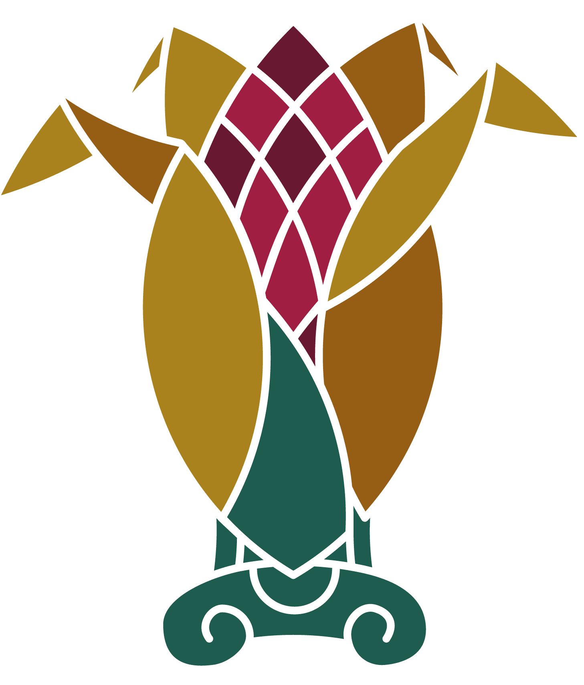

paymentsTotal = gasto en insumo + jornales × (valor fijo de Oaxaca, lo define Nivel Central).
Al enviar, el seguimiento se cierra y ya no se puede editar. Para corregirlo después, Nivel Central tiene que abrir una apertura.